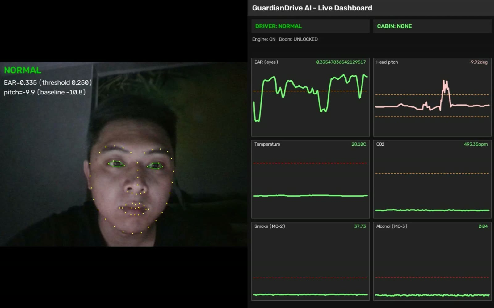

02 — Personal product & researchSản phẩm cá nhân & nghiên cứu
GuardianDrive AI
An integrated vision + IoT safety system for cars: it watches the driver for fatigue, the cabin for a forgotten child or hazardous air, and the road ahead for collision risk — on one shared device instead of three separate products.Hệ thống an toàn ô tô tích hợp thị giác máy tính + IoT: theo dõi tài xế để phát hiện mệt mỏi, giám sát khoang xe để phát hiện trẻ bị bỏ quên hoặc không khí nguy hiểm, và cảnh báo va chạm phía trước — tất cả trên một thiết bị duy nhất thay vì ba sản phẩm tách rời.
Technical paper · self-authoredBài báo kỹ thuật · tự viết · Class 12 Informatics 1, Hanoi – Amsterdam HSG · 2026
GuardianDrive AI: An Integrated Vision and IoT Safety System for Driver State, Cabin Occupancy, and Surround Hazard Awareness
The system runs three sensing layers into one alert policy. Layer 1 (driver state): a camera plus low-light enhancement locates 68 facial landmarks in real time, from which Eye/Mouth Aspect Ratio and head pose flag drowsiness and yawning — tracking holds up at night, with a face mask, or with sunglasses on. Layer 2 (cabin): mmWave radar, alcohol/smoke/CO₂/temperature sensors watch for a child left behind or hazardous cabin air, following the timing rules of the Euro NCAP 2026 child-presence protocol. Layer 3 (surround): a forward camera and ultrasonic sensors estimate time-to-collision. The key idea tying them together: the collision-warning threshold is not fixed — it fires earlier when the driver is measurably drowsy.Hệ thống chạy ba lớp cảm biến, gộp về một chính sách cảnh báo. Lớp 1 (trạng thái tài xế): camera kết hợp tăng cường ảnh thiếu sáng định vị 68 điểm mốc khuôn mặt theo thời gian thực, từ đó tính Eye/Mouth Aspect Ratio và góc nghiêng đầu để phát hiện buồn ngủ, ngáp — vẫn hoạt động ổn định vào ban đêm, khi đeo khẩu trang hoặc kính râm. Lớp 2 (khoang xe): radar mmWave, cảm biến cồn/khói/CO₂/nhiệt độ phát hiện trẻ bị bỏ quên hoặc không khí nguy hiểm trong khoang, theo đúng mốc thời gian của tiêu chuẩn Euro NCAP 2026 về phát hiện trẻ trong xe. Lớp 3 (xung quanh xe): camera phía trước và cảm biến siêu âm ước tính thời gian tới va chạm. Điểm mấu chốt: ngưỡng cảnh báo va chạm không cố định — cảnh báo sẽ đến sớm hơn khi tài xế đo được là đang buồn ngủ.
The driver-monitoring layer (Layer 1) runs in real time on a laptop today; the cabin and surround layers are bench-tested individually and not yet wired into the shared alert policy.Lớp giám sát tài xế (Lớp 1) đã chạy thời gian thực trên laptop; lớp khoang xe và lớp xung quanh xe mới kiểm thử riêng lẻ trên bàn, chưa tích hợp chung vào chính sách cảnh báo.
Computer VisionFacial LandmarksYOLOOpenCVPyTorchIoTArduino / ESP32Euro NCAP 2026
Live dashboardDashboard theo thời gian thực
Eye-aspect-ratio and head-pitch traces track driver alertness frame by frame; cabin panels stream temperature, CO₂, smoke and alcohol readings alongside engine and door state.Đồ thị EAR (độ mở mắt) và góc ngẩng đầu theo dõi mức độ tỉnh táo của tài xế theo từng khung hình; các bảng khoang xe hiển thị nhiệt độ, CO₂, khói và nồng độ cồn cùng trạng thái động cơ và cửa xe.

Demo videoVideo demo
Prototype walkthrough: driver drowsiness detection running live, plus the cabin sensor readouts.Video giới thiệu nguyên mẫu: phát hiện buồn ngủ tài xế chạy trực tiếp, cùng các chỉ số cảm biến khoang xe.
Open in Google Drive →Mở trên Google Drive →
Published paper · co-author (5th of 7)Bài báo đã công bố · đồng tác giả (thứ 5/7) · IJMSM Vol. 3, Issue 3 (Jul–Sep 2026), pp. 120–129 · published 4 Sep 2026công bố 04/09/2026
Reducing Traffic Congestion in Hanoi, Vietnam Using Artificial Intelligence and Internet of Things
Published in the Golden Sun-Rise International Journal of Multidisciplinary on Science and Management (IJMSM). The paper proposes an AI- and IoT-based traffic management system for Hanoi that combines IoT sensors, AI-enabled cameras, GPS/mobile data, edge computing and a cloud control centre. Computer vision, machine learning and reinforcement learning predict traffic conditions so signals can adjust their timing automatically and coordinate neighbouring intersections into green-wave corridors, while also detecting incidents, illegal parking and abnormal congestion.Đăng trên tạp chí Golden Sun-Rise International Journal of Multidisciplinary on Science and Management (IJMSM). Bài báo đề xuất hệ thống quản lý giao thông ứng dụng AI và IoT cho Hà Nội, kết hợp cảm biến IoT, camera AI, dữ liệu GPS/di động, điện toán biên và trung tâm điều khiển trên nền tảng đám mây. Thị giác máy tính, học máy và học tăng cường dự đoán tình trạng giao thông để đèn tín hiệu tự điều chỉnh thời gian và phối hợp các nút giao tạo “làn sóng xanh”, đồng thời phát hiện sự cố, đỗ xe trái phép và ùn tắc bất thường.
Authors:Nhóm tác giả: Nguyen Xuan Hung, Lam An Binh, Le Huy Hoang, Dao Duy Bach, Nguyen Viet Anh, Bui Thai An, Vu Xuan Manh · DOI: 10.71141/30485037/V3I3P111
AIIoTComputer VisionReinforcement LearningSmart Traffic
Read on IJMSM →Xem trên IJMSM →
Full paper (PDF)Toàn văn (PDF)